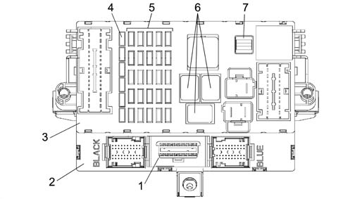
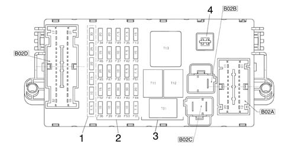
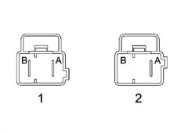
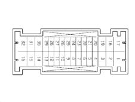
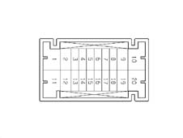
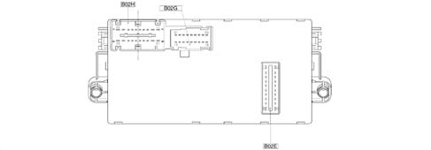
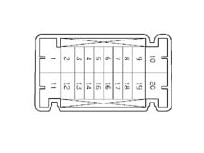
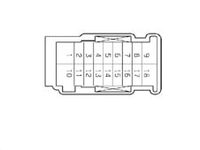

DASHBOARD CONTROL UNIT (CPL)
- Path
- Descriptions > 55 ELECTRICAL EQUIPMENT > 5505 INSTRUMENT/GAUGE ELECTRICAL CIRCUITS > 5505A multi-function components > DASHBOARD CONTROL UNIT (CPL)
- Kind
- system description
- Applies to
- all engines; all production periods
- Interactive page
- https://sloeber94.github.io/elrnDB-lThss/en/#/176180
Applies to: all engines; all production periods
SPECIFICATIONS
It is located on the Body Computer (NBC).
The Dashboard Node (fitted in the area under the dashboard on the steering wheel side) consists of an electronic section (NBC) and an electro-mechanical section (CPL) connected to one another and making up a single assembly. The control unit is equipped with fuses and relays.
Both the electronic and electro-mechanical sections also carry out functions of connecting with the system and have fixed connectors for connection with the front, rear and dashboard wiring.
There are fuses and relays fitted to the electro-mechanical section, whilt there is a fixed EOBD connector on the electronic section which is capable of carrying out fault diagnosis via the K line for the Engine Management Control Unit Node and the systems not connected to the B-CAN line (e.g. Air Bag, controlled suspension, etc.) and via the B-CAN line for the nodes connected to it.
The connector is also prepared for dialogue with the C-CAN line, used for the fault diganosis of all the control units connected to the CAN (excluding the NCM).
The connectors for connection with the front and rear wiring (and the EOBD wiring) are accessible at the front (fuse side), whilst those for connection with the dashboard wiring are located on the opposite side.

- 1 - Diagnostic socket EOBD connector
- 2 - Body Computer (NBC)
- 3 - Dashboard Control Unit (CPL) fitted on the NBC node (CPL+NBC=NPL: Dashboard Node)
- 4 - Reserve fuses
- 5 - System protective fuses
- 6 - Relays
- 7 - Fuse extraction pliers

- 1 - Reserve fuses
- 2 - Protective fuses
- 3 - Relays
- 4 - Pliers
- B02C - 2 pin connector
- B02B - 2 pin connector
- B02D - 32 pin connector
- B02A - 20 pin connector
The CPL dashboard control unit protects the electrical system through the following fuses:
COD | COMPONENT | In[A] | TYPE |
|---|---|---|---|
F-12 | FUSE RIGHT DIPPED HEADLAMP | 15 | mini |
F-13 | FUSE LEFT DIPPED HEADLAMP/CAF GO AHEAD | 15 | mini |
F-31 | FUSE INT/A FOR REVERSING LIGHTS/CVM RELAY COILS | 7,5 | mini |
F-32 | FUSE CENTRE REAR, DOOR, BOOT COURTESY LIGHTS | 10 | mini |
F-33 | FUSE NVB 1 POWER SUPPLY | 20 | mini |
F-34 | FUSE NVB 2 POWER SUPPLY | 20 | mini |
F-35 | FUSE +15 SCC, NAC, CLA (NC) | 7,5 | mini |
F-36 | FUSE +30 TRAILER CONTROL UNIT (PREPARATION) | 10 | mini |
F-37 | FUSE +15 CLA (NA), THIRD BRAKE LIGHT, NQS, CAF | 10 | mini |
F-38 | FUSE FUEL FLAP LOCKING/UNLOCKING GEARED MOTOR | 10 | mini |
F-39 | FUSE NIM, NIT, NCL, EOBD DIAGNOSTIC SOCKET, CSA, PLAF. ENGINE COMPARTMENT | 10 | mini |
F-40 | FUSE HEATED REAR WINDSCREEN | 30 | mini |
F-41 | FUSE WINDSCREEN/REARSCREEN WASHER JET DEFROSTER, HEATED WINDSCREEN | 15 | mini |
F-42 | FUSE +15 NFR, NBA, NAS, NYL | 7,5 | mini |
F-43 | FUSE WINDSCREEN WASH/WIPE | 30 | mini |
F-44 | FUSE CIGAR LIGHTER - CURRENT SOCKET LUGGAGE COMPARTMENT | 20 | mini |
F-45 | FUSE SOLENOIDS FOR HEAD RESTRAINT FOLDING, REARSCREEN WASHER PUMP | 25 | mini |
F-46 | FUSE REARSCREEN BLIND MOTOR | 15 | mini |
F-47 | FUSE NPG POWER SUPPLY | 20 | mini |
F-48 | FUSE NPP POWER SUPPLY | 20 | mini |
F-49 | FUSE +15 FOR NVO, SCS, NSP, NCL, CSG , PCT, NTV, NEC | 7,5 | mini |
F-50 | FUSE AIR BAG SYSTEM | 7,5 | mini |
F-51 | FUSE +15 NCA, WINDSCREEN WIPER CONTROLS, CPP, CLE (DUSK SENSOR ADJUST.), NPP | 7,5 | mini |
F-52 | FUSE REARSCREEN WASH/WIPE, CURRENT SOCKET ON TUNNEL | 15 | mini |
F-53 | FUSE +30 DIRECTION INDICATORS/HAZARD WARNING LIGHTS, NQS | 10 | mini |
The following relays are housed in the dashboard control unit CPL:
COD | COMPONENT | In[A] | TYPE |
|---|---|---|---|
T01 | DIPPED HEADLAMPS RELAY | 30 | micro |
T11 | HEATED REAR WINDSCREEN RELAY | 30 | micro |
T12 | SERVICES 1 RELAY (DEPENDENT ON IGNITION SWITCH INT/A) | 30 | micro |
T13 | SERVICES 2 RELAY (DEPENDENT ON BC) | 50 | micro |
PIN OUT

- 1 - Connector B02C (2 way)
- 2 - Connector B02B (2 way)
Conn. | Pin | Function |
|---|---|---|
B02C | A | +30 from F-71 CBA |
B02C | B | +30 from F-72 CBA |
B02B | B | +30 from F-72 CBA to dashboard cable (preparation) |
B02B | A | Not available |

Conn. | Pin | Function |
|---|---|---|
B02D | 1 | NVB 1 power supply from F-33 |
B02D | 2 | NVB 2 power supply from F-34 |
B02D | 3 | Supply from F-46 for rearscreen blind motor |
B02D | 4 | Supply for rear head restraint folding electro-magnets from F-45 |
B02D | 5 | Additional brake light supply (connection with B02A 15) |
B02D | 6 | NA brake lights positive signal (preparation, connection with B02A 15) |
B02D | 7 | Supply for left reversing light from switch on gearbox (connection with B02A 8) |
B02D | 8 | Supply for right reversing light from switch on gearbox (connection with B02A 8) |
B02D | 9 | Positive signal for rearscreen wash/wipe to NVB for SW versions (connection with B02G 15) |
B02D | 10 | J.C. B-CAN A at rear cable |
B02D | 11 | +30 from F-32 for rear courtesy light, boot/tailgate light, front courtesy lights |
B02D | 12 | Supply for current socket on tunnel and rearscreen wiper motor from F-52 |
B02D | 13 | +30 from F-36 for Trailer Control Unit |
B02D | 14 | Supply for luggage compartment current socket from F-44 |
B02D | 15 | Supply for heated rear windscreen from F-40 |
B02D | 16 | Fuel flap locking motor positive control (connection with B02E 10) |
B02D | 17 | NPP power supply from F-48 |
B02D | 18 | Fuel flap unlocking geared motor positive control (connection with B02E 11) |
B02D | 19 | INT from F-49 for Cell Phone Preparation |
B02D | 20 | Negative signal for rearscreen wiper motor to NVB for SW versions (connection with B02G 11) |
B02D | 21 | INT from F-49 (preparation) |
B02D | 22 | Seat belts warning light negative signal to NQS (connection with B02G 5) |
B02D | 23 | INT from F-49 for PCT |
B02D | 24 | INT from F-49 for NSP |
B02D | 25 | INT from F-51 (preparation) |
B02D | 26 | INT from F-51 for NPB |
B02D | 27 | INT from F-51 for Tyre Inflation Pressure monitoring control unit |
B02D | 28 | J.C. B-CAN B at rear cable |
B02D | 29 | Not available |
B02D | 30 | NPG power supply from F-47 |
B02D | 31 | Supply for windscreen/rearescreen jet defrosters and heated windscreen from F-41 |
B02D | 32 | Supply for fuel pump to tank (connection with B02A 9) |

Conn. | Pin | Function |
|---|---|---|
B02A | 1 | Track to B02G 18 (preparation) |
B02A | 2 | Dipped headlamps enablement from F-13 for Headlamp Alignment Control Unit |
B02A | 3 | Left dipped headlamp supply from F-13 |
B02A | 4 | MIL warning light control signal from NCM (connection with B02G 1) |
B02A | 5 | Supply for engine oil level sensor (connection with B02H 16) |
B02A | 6 | Signal from engine oil level sensor (connection with B02H 15) |
B02A | 7 | Ignition switch INT/A from F-31 for CVM |
B02A | 8 | Supply for reversing lights from switch on gearbox (connection with B02D 7, B02D 8) |
B02A | 9 | Supply for fuel pump from relay (connection with B02D 32) |
B02A | 10 | CTC supply from F-43 |
B02A | 11 | INT from F-42 for NFR, NAS, NYL, NBA |
B02A | 12 | Right dipped headlamp supply from F-12 |
B02A | 13 | INT from F-51 for NCA, NSC |
B02A | 14 | INT from F-37 for NA brake lights (to the switch on the pedal assembly) |
B02A | 15 | Brake lights supply from switch on pedal assembly (connection with B02E 2, B02D 5, B02D 6, B02D 16) |
B02A | 16 | Brake lights signal (NA) for NCM/SCS (connection with B02A 15) |
B02A | 17 | INT from F-35 for cruise control (SCC) |
B02A | 18 | INT from F-35 for NAC |
B02A | 19 | INT from F-35 for CLA (NC) |
B02A | 20 | CPL earth track (preparation, connection with B02H 10) |

- B02H - 20 pin connector
- B02G - 18 pin connector
- B02E - 10 pin connector

Conn. | Pin | Function |
|---|---|---|
B02H | 1 | INT/A from ignition switch |
B02H | 2 | Parking lights negative signal from CLE (connection with B02E 12) |
B02H | 3 | INT from F-49 (preparation) |
B02H | 4 | INT from F-49 for CSG, NCL, NVO, SCS, NTV, CLE (control lights dimmer) |
B02H | 5 | B-CAN B for NIT |
B02H | 6 | INT from F-50 for Air Bag Control Unit |
B02H | 7 | +30 from F-39 for NCL |
B02H | 8 | +30 from F-39 for NIT |
B02H | 9 | Cigar lighter supply from F-44 |
B02H | 10 | CPL power earth (connection with B02E 10, B02G 10, B02A 20) |
B02H | 11 | INT from ignition switch |
B02H | 12 | INT from F-51 for dusk sensor setting adjustment at CLE |
B02H | 13 | INT from F-51 for wiper controls |
B02H | 14 | INT from F-31 for NBC |
B02H | 15 | Signal from engine oil level sensor to NQS (connection with B02A 6) |
B02H | 16 | Supply for engine oil level sensor from NQS (connection with B02A 5) |
B02H | 17 | B-CAN A for NIT |
B02H | 18 | Not available |
B02H | 19 | Supply from F-48 (preparation) |
B02H | 20 | Supply from F-47 (preparation) |

Conn. | Pin | Function |
|---|---|---|
B02G | 1 | MIL warning light negative signal to NQS |
B02G | 2 | INT from F-37 (preparation) |
B02G | 3 | Not available |
B02G | 4 | Not available |
B02G | 5 | Seat belts warning light negative signal to NQS (connection with B02D 22) |
B02G | 6 | Not available |
B02G | 7 | Not available |
B02G | 8 | INT from F-51 (preparation) |
B02G | 9 | INT from F-51 (preparation) |
B02F | 10 | Earth track (preparation, connection with B02H 10) |
B02F | 11 | Negative signal for rearscreen wiper from steering column switch unit for SW versions (connection with B02D 20) |
B02F | 12 | INT from F-49 for hazard warning lights ideogram light |
B02F | 13 | External supply for F-51 (preparation) |
B02F | 14 | Supply + dipped headlamps from F-13 (preparation) |
B02F | 15 | Positive signal for rearscreen wiper from steering column switch unit for SW versions (connection with B02D 9) |
B02F | 16 | +30 from F-32 (preparation) |
B02F | 17 | Supply from F-52 (preparation) |
B02F | 18 | Track to B02A 1 (preparation) |
CONNECTOR B02E MALE CONNECTOR BETWEEN DASHBOARD CONTROL UNIT (CPL) AND BODY COMPUTER (NBC)
Conn. | Pin | Function |
|---|---|---|
B02E | 1 | +30 from F-38 for fuel flpa locking/unlocking geared motor |
B02E | 2 | Left/right brake lights signal (preparation, connection with B02A 15) |
B02E | 3 | Positive signal for reversing lights (connection with B02A 8) |
B02E | 4 | Not available |
B02E | 5 | B-CAN B from NBC |
B02E | 6 | Negative signal controlling heated rear windscreen relay coil (T11) |
B02E | 7 | B-CAN A from NBC |
B02E | 8 | Negative signal controlling dipped headlamps relay coil (T01) |
B02E | 9 | INT for BC |
B02E | 10 | Fuel flap locking geared motor positive control (connection with B02D 16) |
B02E | 11 | Fuel flap unlocking geared motor positive control (connection with B02D 18) |
B02E | 12 | Parking lights negative signal from CLE (connection with B02H 2) |
B02E | 13 | INT from F-37 for NQS/CAF |
B02E | 14 | Negative signal controlling services relay coil 2 (T13) |
B02E | 15 | INT for F-51 supply from NBC (connection with B02E 9) |
B02E | 16 | Not available |
B02E | 17 | +30 from F-39 for NIM, CSA, EOBD diagnostic socket |
B02E | 18 | +30 for NBC (immobilizer, CAN, side lights, rear fog lamps, brake lights SBMT driver, +lights driver) |
B02E | 19 | +30 from F-53 for direction indicators/hazard warning lights, NQS |
B02E | 20 | Earth for fuel flap locking/unlocking geared motor (connection with B02H 10) |